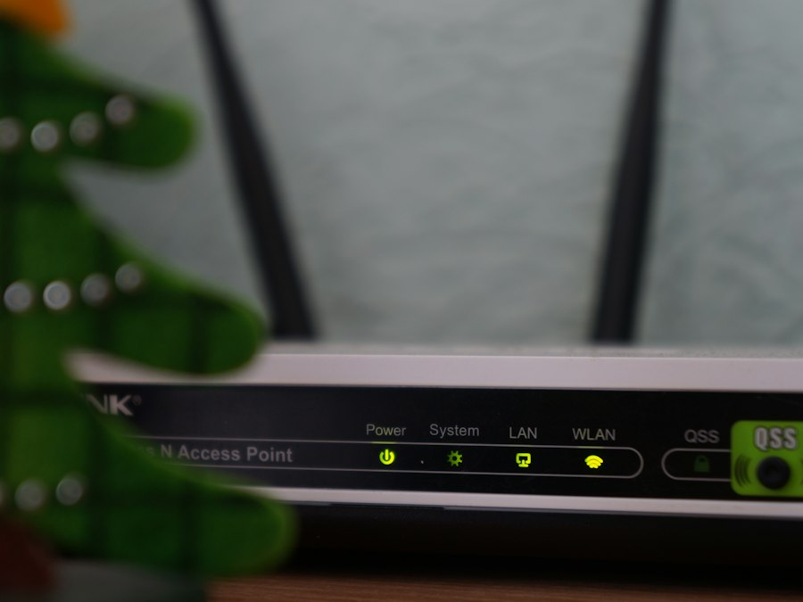

Wi-Fi для дома
Если интернет не добивает по дому
- Роутер MikroTik hAP ax² (Wi-Fi 6)
- Установка и настройка
- Отдельный гостевой Wi-Fi
- Пароль и безопасность
1 650 000 сум
с оборудованием, примерно
Выбрать
Проведу Wi-Fi по всему дому или офису, настрою MikroTik, роутеры и компьютеры.
Работу делаю и отвечаю за неё сам — Саъдулла Хаитов
Основные услуги. Если нужной работы нет в списке — всё равно пишите, подскажу.
RouterOS: firewall, NAT, VPN, несколько провайдеров и ограничение скорости.
Проектирование сети для офиса и дома, прокладка кабеля и установка розеток.
Точки доступа, бесшовный Wi-Fi по всему зданию и гостевая сеть.
Подключение к провайдеру, резервный канал и проверка скорости.
Настройка сервера, принтеров и общих папок, права пользователей.
Поиск неисправностей, мониторинг и постоянное обслуживание.
Здесь будут фотографии реальных проектов.
 Пример
Пример Пример
Пример Пример
Пример
ПримерВыберите готовый пакет или закажите отдельную услугу. Точная цена — после оценки задачи.
Если интернет не добивает по дому
Для офиса до 10 рабочих мест
Если нужна постоянная поддержка
Отдельные услуги: Настройка MikroTik — 150 000 сум (за 1 устройство) · Сетевая точка — 50 000 сум (за 1 розетку)
Частые причины: роутер стоит в углу квартиры, толстые стены, много подключённых устройств или устаревший роутер. Часто помогает уже правильное место для роутера и перенастройка.
Вместо репитера лучше mesh-система или дополнительная точка доступа по кабелю — интернет не обрывается при переходе из комнаты в комнату.
Это профессиональный роутер: два провайдера, отдельный гостевой Wi-Fi, ограничение скорости, VPN между филиалами. Отлично подходит для офиса, магазина и гостиницы, для обычной квартиры не обязателен.
Скажу цену и сроки.